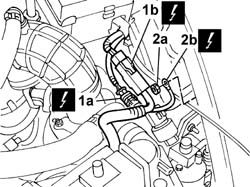
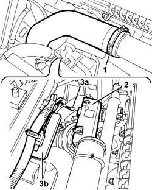

1088E42 MULTIFUNCTION CONTROL UNIT - R.R.
- Path
- Procedures > 10 ENGINE > 1088 ENGINE COOLING > 1088E COOLANT TEMPERATURE CONTROL DEVICES > 1088E42 MULTIFUNCTION CONTROL UNIT - R.R.
- Kind
- repair procedure (removal / refitting; the operation number is the code)
- Applies to
- engines: 2.4 JTD 10V; all production periods
- Interactive page
- https://sloeber94.github.io/elrnDB-lThss/en/#/104756
Applies to: all engines; all production periods
 Removing
Removing
 Refitting
Refitting- Position the vehicle on a lift.
See in Op. 1016A10
See in Op. 1048A21
See in Op. 1048A23
1. Disconnect the electrical connections (1a) and (1b) for the engine cables/fan-radiator cables coupling.
2. Undo the nut (2a) and disconnect the earth lead (2b) from the bodyshell.
 | Description | Connector |
|---|---|---|
1a | Front/radiator coupling | D009A |
| Description | Connector |
|---|---|---|
1b | Front/radiator coupling | D009B |
| Description | Connector |
|---|---|---|
2b | Right front earth | C011 |

Applies to: all engines; all production periods
1. Disconnect the pipe for the air/air heat exchanger from the rigid section.
2. Working on the fixing tabs, remove the plastic protection for the multifunction control unit.
- Cut the plastic bands retaining the wiring.
3. Undo the fixing bolt (3a) and remove the multifunction control unit (3b) complete with wiring.

Applies to: all engines; all production periods
Refitting
Removing- Fit the multifunction control unit in the housing and tighten the fixing bolt.
- Secure the multifunction control unit wiring using new bands.
- Fit the plastic protection in the housing on the multifunction control unit making sure that the plastic tabs are correctly inserted.
- Connect the pipe for the air/air heat exchanger to the rigid section.
- Connect the earth lead in the housing on the bodyshell and tighten the fixing nut.
| Description | Connector |
|---|---|---|
. | Right front earth | C011 |
- Connect the electrical connections for the engine cables/fan-radiator cables coupling.
| Description | Connector |
|---|---|---|
. | Front/radiator coupling | D009A |
| Description | Connector |
|---|---|---|
. | Front/radiator coupling | D009B |
See in Op. 1048A23
See in Op. 1048A21
See in Op. 1016A10
- Remove the vehicle from the lift.